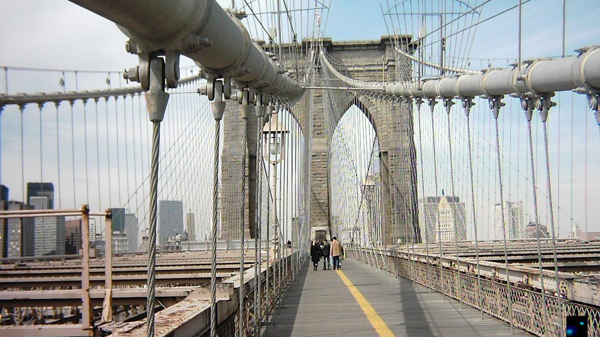

Race, Brooklyn Bridge Commute

Behind
Best +0:01
371W
Target 418 W-47 W
- Cadence
- 87rpm
- Heart
- 140bpm
- Speed
- 26.5km/h
Recover5 of 22
0:56
Next: · 1:00 at level 19
+2.3%
36 m climbed
1.23 km
13
Resistance / 32
Solo races your best-time ghost: position reads Ahead or Behind, and solo alone gets a Pause button. Frozen at 3:04.